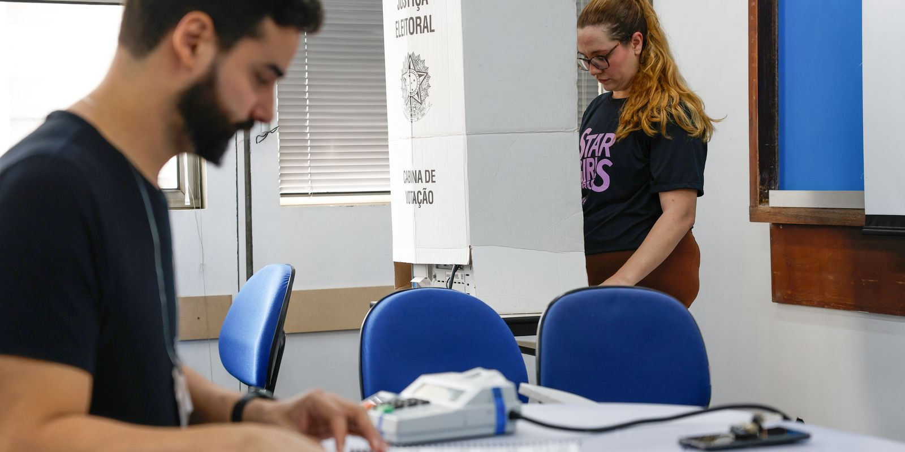

● Dólar opera a R$ 5,03 e mercado espera balanços dos grandes bancos● Receita registra devolução recorde de R$ 41 bilhões do Imposto de Renda 2026● SUS passa a oferecer nove medicamentos oncológicos de alta tecnologia● Itamaraty classifica como inaceitáveis falas de Milei sobre fraude eleitoral● Flamengo supera Botafogo no primeiro clássico carioca do NBB 2026/2027● Pediatras alertam para riscos de brinquedos com inteligência artificial● Quedas: mais de 330 mil crianças foram internadas no Brasil em 10 anos● Fenaj manifesta indignação com formato do debate da TV Band● Hipertensão atinge 28% de crianças e adolescentes, mostra estudo● COP31 será de 9 a 20 de novembro em Antália, na Turquia; Lula confirmou presença● Datafolha: Flávio Bolsonaro tem 47% e Lula, 45% no segundo turno; resultado é empate técnico● Enem 2026 será em 8 e 15 de novembro; provas começam às 13h30 e há mais de 5 milhões de inscritos● Dólar opera a R$ 5,03 e mercado espera balanços dos grandes bancos● Receita registra devolução recorde de R$ 41 bilhões do Imposto de Renda 2026● SUS passa a oferecer nove medicamentos oncológicos de alta tecnologia● Itamaraty classifica como inaceitáveis falas de Milei sobre fraude eleitoral● Flamengo supera Botafogo no primeiro clássico carioca do NBB 2026/2027● Pediatras alertam para riscos de brinquedos com inteligência artificial● Quedas: mais de 330 mil crianças foram internadas no Brasil em 10 anos● Fenaj manifesta indignação com formato do debate da TV Band● Hipertensão atinge 28% de crianças e adolescentes, mostra estudo● COP31 será de 9 a 20 de novembro em Antália, na Turquia; Lula confirmou presença● Datafolha: Flávio Bolsonaro tem 47% e Lula, 45% no segundo turno; resultado é empate técnico● Enem 2026 será em 8 e 15 de novembro; provas começam às 13h30 e há mais de 5 milhões de inscritos

Imagem ilustrativaPolítica
TRE-RJ alterou apenas um local de votação no estado; confira
O Tribunal Regional Eleitoral do Rio de Janeiro (TRE-RJ) informou nesta segunda-feira (19) que houve alteração em apenas um local de votação no segundo turno. A mudança ocorre na capital…
Por Redação Portal de Notícias BR · · 2 min de leitura
O Tribunal Regional Eleitoral do Rio de Janeiro (TRE-RJ) informou nesta segunda-feira (19) que houve alteração em apenas um local de votação no segundo turno. A mudança ocorre na capital, no bairro de Brás de Pina, na zona norte do Rio.
Nos demais 92 municípios fluminenses, o eleitor votará neste domingo (25) no mesmo lugar em que votou no primeiro turno.
Com a decisão, os mais de 1,8 mil eleitoras e eleitores da 188ª Zona Eleitoral que votaram no domingo (4) na Rede de Ensino EEEPV na Rua Muaná, 105, deverão se dirigir para a Rede de Ensino EEEPV na Rua Irapuá, 243, na Penha Circular.
Segundo o TRE-RJ, a mudança tem por objetivo "garantir melhor infraestrutura de atendimento ao eleitorado" e afeta o eleitorado de cinco seções: 123, 124, 125, 126 e 127.
O novo local fica a cerca de 1,3 quilômetros de distância do anterior. A Rede de Ensino EEEPV (unidade da Penha Circular) já funcionou no primeiro turno como local de votação para eleitores de outras dez seções, que continuarão no mesmo lugar.
Fontes: Fonte: Agência Brasil · conteúdo sob licença CC BY 3.0 BR